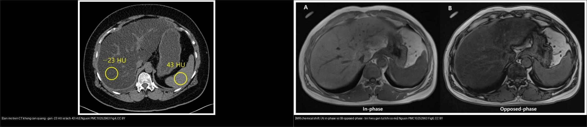
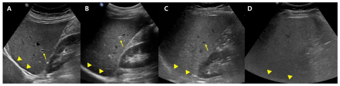
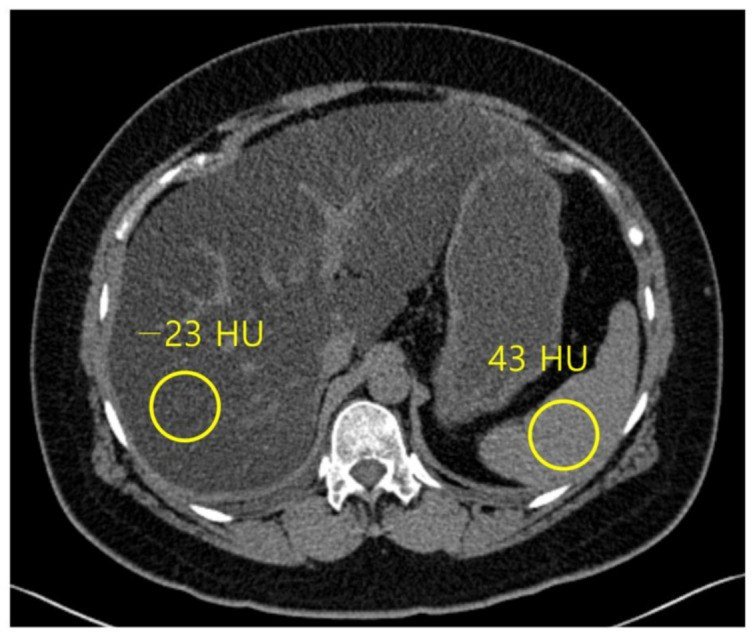
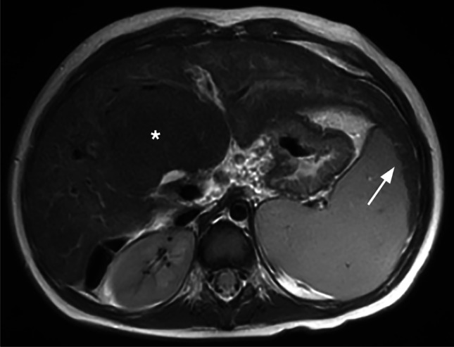
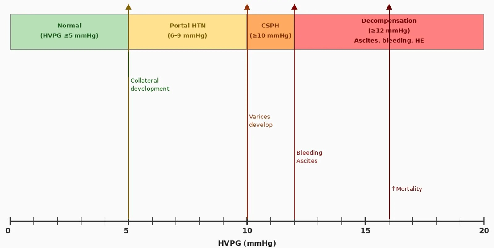

125 — Gan nhiễm mỡ, xơ gan & tăng áp cửa / Fatty liver, Cirrhosis & Portal hypertension
Tags: pattern:gan-lan-toa vung:gan score:PDFF protocol:CT-MRI-gan protocol:Fibroscan
Mức chắc chắn (certainty): tổng hợp y văn (literature synthesis) — nhóm tự biên từ y văn mở (Diagnostics 2023 CC BY, Pediatr Radiol 2023 CC BY, Cureus 2026 CC BY), chưa gắn ca nguyên văn đơn lẻ.
1. Tổng quan — mỡ → viêm → xơ → tăng áp cửa + TẠI SAO mỗi bước đổi hình ảnh
- Gan nhiễm mỡ (steatosis): mỡ nội bào giảm suy giảm tia X → giảm đậm độ HU so với lách; trên MRI, mỡ và nước lệch pha ở ảnh đối pha (opposed-phase) → tín hiệu gan tụt so với ảnh cùng pha (in-phase). TẠI SAO: proton mỡ (−CH₂−) và proton nước tần số khác nhau; ở đối pha hai tín hiệu triệt tiêu → mất tín hiệu tỉ lệ với lượng mỡ.
- Ngưỡng định lượng mỡ: CT gan < 40 HU hoặc gan − lách ≥ 10 HU (không cản quang) → nghĩ nhiễm mỡ; MRI-PDFF (proton density fat fraction) ≥ 5% = nhiễm mỡ, ≥ 33% = mỡ nặng (grade 3). Siêu âm: tăng hồi âm, khó thấy mạch máu/cơ hoành, chỉ số gan–thận (hepatorenal index).
- Xơ gan (cirrhosis): xơ hóa co kéo + nốt tái tạo (regenerative nodule) → bờ gồ ghề, thùy phải teo + thùy đuôi/trái phì đại, lách to, dịch ổ bụng. TẠI SAO: xơ bít dòng → tải máu dồn vào phân thùy còn lại.
- Tăng áp cửa (portal hypertension): HVPG ≥ 6 mmHg định nghĩa tăng áp cửa; ≥ 10 mmHg = CSPH (tăng áp cửa có ý nghĩa lâm sàng); ≥ 12 mmHg = nguy cơ vỡ giãn TMTQ + mất bù; TIPS nhắm HVPG < 12 mmHg. Bàng hệ hay gặp 80–90%: tái thông tĩnh mạch rốn (paraumbilical), lách–thận, giãn TMTQ (gastric varices theo Sarin: GOV1/2, IGV1/2).
2. Gamut gan lan tỏa + giãn TM
- Nhiễm mỡ (đơn thuần hoặc MASH): gan tối hơn lách (−23 HU vs 43 HU), mạch xuyên bình thường — cai rượu/giảm cân, không sinh thiết thường quy.
- Xơ + bàng hệ: bờ gồ ghề + tái thông rốn + lách to — tầm soát HCC mỗi 6 tháng.
- Huyết khối TM cửa: lấp đầy không ngấm + giãn TM — cấp (đau) vs mạn (hang mạch).
- Huyết khối u (HCC): ngấm ĐM trong huyết khối + u kề + AFP tăng — không mổ cắt gan thường.
- Mỡ khu trú (focal steatosis) / vùng chừa mỡ (focal sparing): gặp ở vùng chừa quanh túi mật/hạ phân thùy IV — giả u trên siêu âm (cần MRI chemical-shift).

Trái: gan mỡ nặng — đậm độ gan (−23 HU) thấp hơn hẳn lách (43 HU) (PMC10252963 Fig. 4, CC BY). Phải: MRI chemical shift — (A) cùng pha vs (B) đối pha, tín hiệu gan tụt ở (B) do mỡ (PMC10252963 Fig. 6, CC BY). Ảnh ghép letterbox.Quiz composite: che 2 nhãn, hỏi dấu định lượng nào trên mỗi chuỗi khẳng định có mỡ gan?
Bấm để hiện đáp án
- Trái (CT): chốt định lượng là gan −23 HU < 40 HU và gan − lách = 66 HU ≥ 10 HU → nhiễm mỡ nặng.
- Phải (MRI): chốt là tín hiệu gan tụt trên ảnh đối pha (B) so với cùng pha (A) — mất tín hiệu tỉ lệ lượng mỡ; định lượng chính xác bằng PDFF.
- Chốt phân biệt: CT nhiễm mỡ thật khác u/huyết khối (thường khu trú, ngấm sau tiêm); MRI chemical-shift phân biệt mỡ với máu/melanin (máu/melanin không mất tín hiệu ở đối pha).
3. Bảng so sánh phân biệt (ma trận đối chiếu)
| Thực thể (entity) | Hình ảnh điển hình | Chốt vào (rule-in) | Chốt loại (rule-out) | Gợi ý xác nhận |
|---|---|---|---|---|
| Nhiễm mỡ lan tỏa | Gan < 40 HU / gan−lách ≥ 10 HU, mạch xuyên bình thường; PDFF ≥ 5% | Giảm HU lan tỏa + mất tín hiệu đối pha + mỡ ≥ 5% | U khu trú ngấm sau tiêm → không phải mỡ đơn thuần | MRI chemical-shift/PDFF, siêu âm định lượng |
| Xơ gan | Bờ gồ ghề + thùy đuôi phì đại + lách to + dịch | Nốt tái tạo + bờ gồ ghề + bàng hệ | Gan bờ nhẵn + không bàng hệ → chưa xơ | Fibroscan/đàn hồi, theo dõi HCC 6 tháng |
| Tăng áp cửa | Giãn TM cửa > 13 mm + tái thông rốn + TMTQ + lách to | HVPG ≥ 10 (CSPH) / bàng hệ + tiểu cầu thấp | Bàng hệ đơn độc không giãn TM → chưa tăng áp rõ | Doppler TM cửa, nội soi tìm giãn TMTQ |
| Huyết khối TM cửa | Lấp đầy không ngấm + giãn TM | Cấp: đau + không ngấm | Ngấm ĐM trong huyết khối → nghĩ u | CT/MRI đa thì, Doppler |
| Huyết khối u (HCC) | Ngấm ĐM trong huyết khối + u kề | Ngấm+thải + AFP tăng + HCC kề | Không ngấm → huyết khối sạch | MRI gan (HCA/Eovist), AFP, LI-RADS |
4. Protocol chụp + hệ định lượng / phân độ
- Định lượng mỡ: siêu âm định lượng (hồi âm/AC/HRI/UDFF) sàng lọc → MRI-PDFF là chuẩn tham chiếu (≥ 5% mỡ); CT cửa khi cần tổng quan nhưng kém nhạy với mỡ nhẹ.
- Định lượng xơ: Fibroscan (đàn hồi gan, kPa) + xét nghiệm không xâm lấn (FIB-4); MRI (cT1, MRE) bổ sung.
- Tăng áp cửa: siêu âm Doppler TM cửa (đường kính, hướng dòng, huyết khối) + nội soi tìm giãn TMTQ; HVPG là chuẩn (≥ 6 tăng áp; ≥ 10 CSPH; ≥ 12 nguy cơ vỡ).
- Tầm soát HCC: siêu âm ± AFP mỗi 6 tháng ở xơ gan (bài 121) — nốt mới cần MRI/CT đa thì.
flowchart TD
A[Gan tang hoi am / giam HU lan toa] --> B{Do mo dinh luong}
B -->|PDFF >= 5%| C[Nhiem mo - giam can/cai ruou, danh gia viem roi loan chuyen hoa]
B -->|< 5%| D[Khong phai mo - tim nguyen nhan khac]
C --> E{Co xo / tang ap cua?}
E -->|Be gan go ghe + bang he + tieu cau thap| F[Xo gan - Fibroscan/HVPG, tam soat HCC 6 thang]
F --> G{HVPG >= 12 / gian TMTQ}
G -->|Co| H[Du phong vo gian: chan beta / thiet lap TIPS neu can]
G -->|Khong| I[Theo doi dinh ky]
5. Biến thể bình thường và cạm bẫy
- Vùng chừa mỡ (focal sparing) quanh túi mật/hạ phân thùy IV giả khối — MRI chemical-shift chốt (mất tín hiệu ở vùng "u" = mỡ, không phải u).
- Nhiễm mỡ + xơ cùng lúc làm "đối xứng" tín hiệu: gan vẫn tối hơn lách dù có xơ — đừng loại xơ chỉ vì CT còn mỡ.
- Huyết khối u vs huyết khối sạch: ngấm ĐM trong huyết khối là dấu hiệu chỉ HCC — thay đổi hoàn toàn điều trị (không mổ cắt gan thường).
- Bàng hệ tái thông rốn giả di căn dây chằng tròn — cuộn coronal xem mạch liên tục, có dòng trên Doppler.
- Nốt tăng sản tái tạo ở xơ giả HCC — không áp LI-RADS trên gan xơ nền (bài 121).
6. Tự lượng giá — Blind Quiz
Ca 1 — Chẩn đoán hình ảnh siêu âm: 4 mức độ gan mỡ. Nhìn panel, xếp thứ tự độ:

- Hỏi: dấu siêu âm nào tăng dần theo độ? Ngưỡng định lượng chuẩn tham chiếu là gì?
Bấm để hiện đáp án (findings + chẩn đoán)
- Dấu hiệu: (A) gan–thận tương phản rõ, thấy mạch/cơ hoành → (D) tăng hồi âm dần, mờ mạch máu và cơ hoành.
- Chẩn đoán: gan nhiễm mỡ nhẹ → trung bình → nặng; chuẩn tham chiếu định lượng là MRI-PDFF (≥ 5%).
- Nguồn ảnh: Diagnostics 2023 (PMC10252963) Fig. 1, CC BY.
Ca 2 — Bệnh nhân béo bụng, men gan tăng. CT không cản quang gan −23 HU, lách 43 HU:

- Hỏi: tính chênh gan–lách? Chẩn đoán? Có cần sinh thiết không?
Bấm để hiện đáp án (findings + chẩn đoán)
- Chênh gan − lách = 66 HU (≥ 10 HU) và gan −23 HU (< 40 HU) → nhiễm mỡ nặng.
- Không cần sinh thiết thường quy; cai rượu/giảm cân + kiểm soát chuyển hóa, đánh giá viem/xơ bằng xét nghiệm + Fibroscan/PDFF.
- Nguồn ảnh: Diagnostics 2023 (PMC10252963) Fig. 4, CC BY.
Ca 3 — Xơ gan trên MRI: thùy đuôi phì đại + nốt tái tạo. Nhìn hình, mô tả bờ gan và kiểm tra bàng hệ:

- Hỏi: dấu hình thái chốt xơ gan? Cần tìm thêm gì để đánh giá tăng áp cửa?
Bấm để hiện đáp án (findings + chẩn đoán)
- Dấu hiệu: phì đại phân thùy 1 (thùy đuôi) + nốt tái tạo (dấu hoa thị) + phân thùy 2/3 to, bờ gan gồ ghề.
- Tìm thêm: lách to, tái thông TM rốn, giãn TMTQ, dịch ổ bụng (Doppler TM cửa ± nội soi) để xác định CSPH (HVPG ≥ 10 mmHg).
- Nguồn ảnh: Pediatr Radiol 2023 (PMC10027649) Fig. 2, CC BY.
Ca 4 — Sơ đồ HVPG trong tăng áp cửa. Nhìn hình, kể các ngưỡng quyết định:

- Hỏi: HVPG bao nhiêu gọi là tăng áp cửa, bao nhiêu là CSPH, bao nhiêu nguy cơ vỡ giãn TMTQ?
Bấm để hiện đáp án (findings + chẩn đoán)
- HVPG ≥ 6 mmHg = tăng áp cửa; ≥ 10 mmHg = CSPH; ≥ 12 mmHg = nguy cơ vỡ giãn TMTQ + mất bù.
- Điều trị: chẹn beta không chọn lọc / thắt vòng khi giãn TMTQ; TIPS nhắm HVPG < 12 mmHg hoặc giảm ≥ 20%.
- Nguồn ảnh: Cureus 2026 (PMC13645364) Fig. 1, CC BY.
Bài liên quan chéo
- 100 – Tổng quan hệ Bụng
- 110 – Giải phẫu bụng (TM cửa, lách)
- 120 – Khối gan nền lành vs xơ (u lành/hemangioma/FNH)
- 121 – LI-RADS & HCC (tầm soát HCC nền xơ)
- 130 – Túi mật (vùng chừa mỡ quanh túi mật)
- 170 – Phình ĐMC bụng (bàng hệ, dịch ổ bụng)
Ảnh
- Nguồn + giấy phép từng ảnh trong
images/CREDITS.md. - AuntMinnie: chỉ dẫn link, không tải.
Không dùng để chẩn đoán độc lập khi chưa có người hướng dẫn.